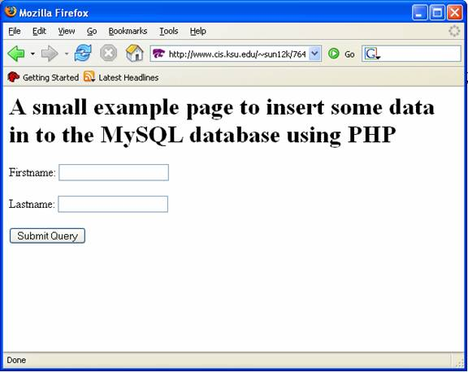

My Sql (sequel)
MySQL is an open-source relational database management system (RDBMS).[6] Its name is a combination of "My", the name of co-founder Michael Widenius's daughter, and "SQL", the abbreviation for Structured Query Language.
MySQL is free and open-source software under the terms of the GNU General Public License, and is also available under a variety of proprietary licenses. MySQL was owned and sponsored by the Swedish company MySQL AB, which was bought by Sun Microsystems (now Oracle Corporation). In 2010, when Oracle acquired Sun, Widenius forked the open-source MySQL project to create MariaDB.
MySQL is a component of the LAMP web application software stack (and others), which is an acronym for Linux, Apache, MySQL, Perl/PHP/Python. MySQL is used by many database-driven web applications, including Drupal, Joomla, phpBB, and WordPress. MySQL is also used by many popular websites, including Facebook, Twitter, Flickr, and YouTube.